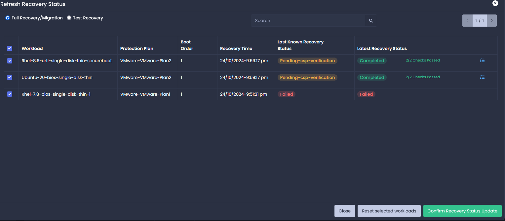
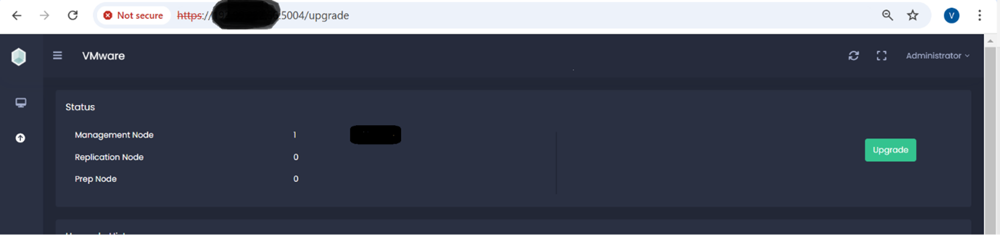
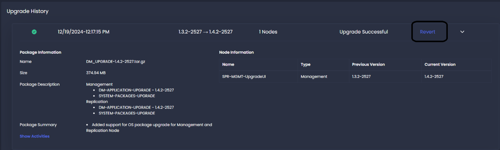
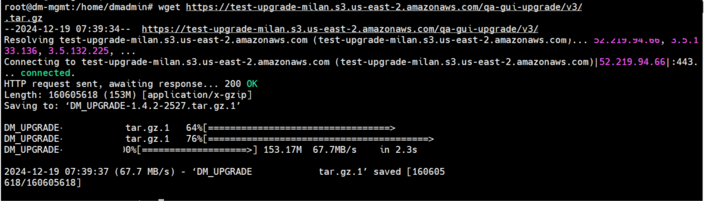
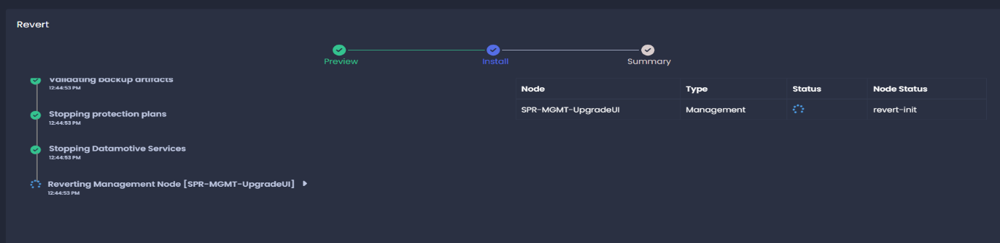

1. Introduction
Datamotive Hybrid, Multi-Cloud Workload Portability platform delivers disaster recovery and workload migration as self-service products and enables simplified cross-hypervisor replication and recovery.
Datamotive Workload Portability platform can be used to protect or migrate your virtual machines/instances on primary site by replicating them periodically to the recovery site. The protected virtual machines/instances can then be recovered as needed in the recovery site as target native instances (E.g., protected AWS EC2 instances are recovered as a native VMware virtual machines).
This document provides information about how to deploy, configure and manage the Datamotive solution. It also provides a general overview of Datamotive platform and its different components.
2. Datamotive Component Architecture
Datamotive workload portability platform comprises of following components deployed as independent virtual machines (VMs). All the components are shipped either as virtual appliances or cloud native machine images depending on the target infrastructure. All the virtual appliances are fully security hardened and based on CIS certified Ubuntu-20 Server edition images.
-
Datamotive Management Server is a virtual appliance deployed in protected or recovery site infrastructure where the VMs need to be protected, recovered, or migrated. Management Server provides user interface (UI), a CLI and RESTful APIs for the IT administrators to perform Day0-DayN activities. The server also acts as replication node. It is shipped as an OVA for VMware environment and cloud native machine image for AWS, GCP and Azure environments.
-
Datamotive Replication Node is a virtual appliance deployed in protected or recovery site. It is used to execute the data replication jobs. This node can be used to increase the overall replication capacity of the solution based on the number of protected VMs/instances. Maximum number of parallel replication jobs (one replication job per protected disk/volume) supported by each node is defined by the limit provided by cloud platforms (default limit for replication is 40 and for recovery is 25). It is shipped as an OVA for VMware environment and cloud native machine image for AWS, GCP and Azure environment. Datamotive solution scales horizontally using the Replication nodes for large environments where high numbers of workloads need to be replicated in parallel.
-
Datamotive Prep Node is a Windows virtual appliance deployed in the recovery site infrastructure (VMware, AWS, GCP or Azure). This appliance is powered-on and used only when Windows VMs are getting recovered or migrated. It is shipped as an OVA for VMware environment and cloud native machine image for AWS, GCP and Azure environment. Each Prep Node supports parallel recovery of up to 25 virtual machines/instances.
-
Datamotive DeDupe Node is a virtual appliance deployed at both source site and recovery site (public cloud) infrastructure (AWS, GCP and Azure). It maintains the checksum and data for data chunks transferred to the recovery site. The DeDupe node, when configured to be used, enables already replicated data chunks to be used, significantly reducing the data transfer. It is shipped as an OVA for VMware environment and native cloud image for AWS, GCP and Azure environments.

2.1 What can one do with Datamotive?
Datamotive currently provides fully functional and intuitive GUI, APIs and Python SDK for performing all supported operations. Once deployed, admins can access the Datamotive GUI by logging into the Management Server on the protected site. The URL for accessing the management server is https://<Management_Node_IP_Address>:5000. The default credentials to access the application are administrator/admin.
DR Administrators can perform the following set of Day1-DayN operations using the Datamotive GUI. Subsequent sections of this document describe the user interface and related options in detail.
Table 1: Day1–DayN operations using the Datamotive GUI| Category | Action/Activity | Description | Quick Link |
|---|---|---|---|
| Provisioning | Nodes management | Management of different nodes of Datamotive solution | Nodes Configuration |
| Site management | Creation and management of protected and recovery sites using the nodes already created | Sites configuration | |
| Protection and Recovery | Protection plan | Creation and management of protection plans for workload protection | Protection Plans |
| Test recovery | Validation of replicated instances through non-disruptive test recovery | Test Recovery | |
| Full recovery (failover) | Recovery of protected instances on recovery site | Full Recovery | |
| Migration | Migration of instances from source to target platform | Migration | |
| Reverse (failback) | Reverse/Re-protection of VMs to original source | Reverse | |
| Replication/Recovery Jobs | View replication and recovery jobs for their replication statuses | Jobs | |
| Monitoring | Events/Alerts | View, acknowledge, take action on Events & Alerts | Monitor |
| Infrastructure | Monitor and detect changes in protected instances and take appropriate corrective actions on recovery instance configuration | ||
| User Management | View users of system with their roles and privileges | Roles | |
| Configuration | Bandwidth Throttling | Configure bandwidth usage for changed data transfer | Throttling |
| Email Settings | Configure email settings to enable email notifications for supported alerts | ||
| Tech Support | Manage support bundle creation for troubleshooting purposes | Tech Support | |
| Scripts | User defined custom scripts to be executed during recovery operations | Scripts | |
| License | Manage licenses | License | |
| Users | Manage users | Users | |
| Identity Provider | SAML authentication | Identity Provider | |
| Upgrade | Upgrading the nodes | Steps for upgrading the nodes | Upgrade |
3. Support Matrix
This section will outline the Support Matrix, detailing the various support options available to users and how they align with specific features and workflows.
3.1 Infrastructure
Table 2: Support matrix - Infrastructure| Component | Support |
|---|---|
| Source Platforms | VMware, AWS, Azure |
| Target Platforms | VMware, AWS, Azure, GCP |
| Workloads | VMs with directly attached block storage |
Table 4: Support matrix - Supported versions
| Component | Supported Versions |
|---|---|
| VMware vCenter Server | vCenter Server 6.5 (U3) vCenter Server 6.7 (GA, U1, U2, U3) vCenter Server 7.0 (GA, U1, U2, U3) |
| ESXi Host | ESXi 6.5 (GA, U1, U2, U3) ESXi 6.7 (GA, U1, U2, U3) ESXi 7.0 (GA, U1, U2, U3) ESXi 8.0 |
| VMware Virtual Machines | X-86 based Windows & Linux Guest OSs Windows Guest OSs with BIOS & UEFI boot types. Linux Guest OSs with BIOS boot type for cross cloud. VMFS based storage attached to VMs with mode as “Dependent” is
supported. PRDM is not supported. Encrypted disks are not supported. |
| AWS EC2 Instances | EC2 Instance families based on Intel, AMD & Nitro systems. Windows Guest OSs with BIOS & UEFI boot types. Linux Guest OSs with BIOS boot type for cross cloud. For AWS as source & target BIOS & UEFI both are supported. EBS storage families GP2, GP3, IO-1 & IO-2. |
| GCP Machines | GCP instances families based on Intel architecture. Windows Guest OSs with BIOS & UEFI boot types. Linux Guest OSs with BIOS boot type for cross cloud. Storage families Standard & Balanced types. |
| Azure Virtual Machines | Azure Instance families based on Intel architecture. Windows Guest OSs with BIOS & UEFI boot types. Linux Guest OSs with BIOS boot type for cross cloud. For Azure as source & target BIOS & UEFI both are supported. Storage families Standard HDD, Standard SSD & Premium SSD. |
3.2 Guest OSs
Table 5: Support matrix - Guest OSs| Component | Supported Versions |
|---|---|
| CentOS | 7.8 Kernel Versions: 3.10.0-1127.19.1.el7.x86_64 3.10.0-1127.18.2.el7.x86_64 3.10.0-1127.13.1.el7.x86_64 3.10.0-1127.el7.x86_64 7.9 Kernel Versions: 3.10.0-1160.80.1.el7.x86_64 3.10.0-1160.76.1.el7.x86_64 3.10.0-1160.71.1.el7.x86_64 3.10.0-1160.66.1.el7.x86_64 3.10.0-1160.62.1.el7.x86_64 3.10.0-1160.59.1.el7.x86_64 3.10.0-1160.53.1.el7.x86_64 3.10.0-1160.el7.x86_64 8 Stream 4.18.0-408.el8.x86_64 (ext4 filesystem) 8.2 Kernel Versions: 4.18.0-193.el8.x86_64 4.18.0-193.28.1.el8_2.x86_64 8.5 Kernel Versions: 4.18.0-348.el8.x86_64 4.18.0-348.23.1.el8_5.x86_64 |
| RHEL | 7.8 Kernel Versions: 3.10.0-1127.19.1.el7.x86_64 3.10.0-1127.18.2.el7.x86_64 3.10.0-1127.13.1.el7.x86_64 3.10.0-1127.el7.x86_64 7.9 Kernel Versions: 3.10.0-1160.80.1.el7.x86_64 3.10.0-1160.76.1.el7.x86_64 3.10.0-1160.71.1.el7.x86_64 3.10.0-1160.66.1.el7.x86_64 3.10.0-1160.62.1.el7.x86_64 3.10.0-1160.59.1.el7.x86_64 3.10.0-1160.53.1.el7.x86_64 3.10.0-1160.el7.x86_64 8.2 Kernel Versions: 4.18.0-193.el8.x86_64 4.18.0-193.28.1.el8_2.x86_64 8.5 Kernel Versions: 4.18.0-348.el8.x86_64 4.18.0-348.23.1.el8_5.x86_64 8.6 Kernel Versions: 4.18.0-372.26.1.el8_6.x86_64 |
| Ubuntu | Ubuntu 14: 4.4.0-148-generic Ubuntu 16: 4.15.0-45-generic 4.15.0-142-generic 4.10.0-28-generic Ubuntu 18 5.4.0-42-generic, 5.4.0-72-generic 5.4.0-91-generic Ubuntu 20: 5.11.0-27-generic |
| Oracle Linux | Oracle 7.8 4.14.35-1902.300.11.el7uek.x86_64 4.14.35-2047.519.2.1.el7uek.x86_64 Oracle 7.9 5.4.17-2102.201.3.el7uek.x86_64 5.4.17-2136.313.6.el7uek.x86_64 |
| Windows | Standard & Datacenter editions of following versions. 2K12 R2 2K16 (Build version 10.0.14393.1198 and above) 2K19 |
| SUSE | SUSE 15 SP3 Kernel version: 5.3.18.57-default SUSE 15 SP2 Kernel version: 5.3.18.22-default |
3.3 Client Browsers
Table 6: Support matrix: Client browsers| Component | Supported Versions |
|---|---|
| Google Chrome | 99.0.4844.82 99.0.4844.84 107.0.1418.56 107.0.5304.122 116.0.5845.111 130.0.6723.117 131.0.6778.205 133.0.6905.0 133.0.6903.3 |
| Microsoft Edge | 100.0.1185.29 107.0.1418.56 116.0.1938.54 116.0.1938.62 126.0.2592.68 130.0.6723.117 131.0.2903.48 131.0.2903.86 131.0.2903.112 |
| Mozilla Firefox | 98.0.2 127.0.1 131.0.3 132.0 133.0 133.0.3 |
4. Features and Workflows
This section will discuss the key features and workflows of the Datamotive solution, providing an in-depth look at how each component functions and integrates with the overall architecture.
4.1 Authentication

Figure 2: Authentication
Step 1: Open the Datamotive UI through URL
https://<Management_Server_IP_Address>:5000
Step 2: By default, Datamotive will create the following four users:
-
Administrator
-
DRadmin
-
Guest
-
SupportAdmin
The default password for all the users is “admin”.
Step 3: Provide the username and password and click Login. On successful login, the Datamotive Dashboard is displayed.
| Note: If logging in for the first time then for security reasons password change is mandatory |
|---|
Table 6: Support matrix: Client browsers
Step 4: Provide the current password and new password. Click the Change Password button to set the new password for the system.
4.2 Dashboard
Dashboard provides an at-a-glance overview of the data protection status of the environment.

Figure 3: Dashboard
The Dashboard features are discussed below:
4.2.1 Title Panel
Title panel will provide overall information on the configured and protected environments.

Figure 4: Title panel
Table 6 lists the Title Panel components and their description.
Table 7: Title panel components| Title | Description |
|---|---|
| Sites | Sites configured on the node |
| Protection Plans | Total number of Protection plans configured |
| Protected Machines | Total number of protected virtual machines or instances |
| Storage | Overall protected storage size |
4.2.2 Alerts
Alerts are active/unacknowledged alerts that need some user acknowledgement or action.

Figure 5: Alerts
4.2.3 RPO and RTO
This section displays information about currently configured Recovery Point Objective (RPO) and Recovery Time Objective (RTO).

Figure 6: RPO and RTO
Table 7 lists the RPO and RTO components and their description.
Table 8: RPO and RTO| Title | Description |
|---|---|
| RPO | Average recovery point objective (RPO) value |
| RTO | Average of recovery time Objective (RTO) value |
| Test Executions | Total number of test recoveries executed (this includes Failed/Successful or Partially completed) |
| Full Recovery | Total number of VMs recovered successfully (this includes Failed/Successful or Partially completed) |
| Migrations | Total number of VMs migrated successfully (this includes Failed/Successful or Partially completed) |
4.2.4 Replication Statistics
Replication statistics provide an overview of replication jobs about the protected environment.

Figure 7: Replication statistics
Table 8 lists the Replication Statistics components and their description.
Table 9: Replication statistics| Label | Description |
|---|---|
| Completed | Total number of replication iterations completed successfully |
| Running | Replication iterations that are currently active/running |
| Failed | Total number of failed replication iterations |
| Change Rate | Average data change rate for all protected VMs |
| Data Reduction | Average percentage of data reduction for all the completed replications that have compression enabled |
4.2.5 Jobs
Jobs section displays the information about the latest jobs started or completed in the system.

Figure 8: Jobs
4.2.6 Virtual Machine Protection Analysis
Virtual machine protection analysis displays the overall status of protected site environment in terms of total discovered VMs with percentage of protected and unprotected VMs. This wizard also provides the details for replication statistics of VMs that are in-sync and the ones that are not in-sync.

Figure 9: Virtual machine protection analysis
4.2.7 Bandwidth Usage
Bandwidth usage provides detailed network usage which is downloaded and uploaded using the nodes for the last 12 hours.

Figure 10: Bandwidth usage
4.2.8 Site Connections
Site Connections section provides connection details of configured sites in terms of data flow, i.e., from which source site data is replicating to the target site.

Figure 11: Site connections
4.2.9 Events
Events are records of user actions or system actions that occurred in the Datamotive system. The Events widget provides the five most recent events generated in the system.

Figure 12: Events
4.3 Nodes
The Nodes section displays all the nodes registered with the management node along with their status. This is a snip of how different nodes are configured in the Datamotive UI.

Figure 13: Nodes
4.3.1 Nodes Configuration
Nodes are entities where the Datamotive server is installed (e.g. AWS, GCP, VMWare, Azure, etc.). There are four types of Datamotive Nodes — Management, Replication, Dedupe and Win Prep. Each node has a specific functionality.
-
Management node performs Datamotive management operations. There must be only one Management node for each site (vCenter Server for VMware and a Region/Zone in Cloud). The management node also has a replication engine that allows it to perform replication operations too.
-
Replication nodes are responsible for performing replication activities. These can be added based on the number of VM disks to be replicated in parallel. Replication nodes can be added to meet the requirement for large-scale environments.
-
Dedupe node is a special type of node required to support deduplication. This node is required only on the Recovery site.
-
Win Prep node is a special type of node and is required to perform the Windows recovery operations only.
For all the nodes, Datamotive provides separate images, OVAs for VMware and Cloud-specific machine images. Once a Node of a given type is deployed in the infrastructure, it needs to be added in the Datamotive Management server. Nodes must be deployed and configured in the following manner:
-
Management Node: Deploy one management node per protected site. The local node representing the management node automatically gets registered.
-
Remote Management Node: Deploy one management node per recovery site. Register the management nodes from recovery site in Management node of protected site.
-
Replication Nodes: Deploy replication node based on load. Once deployed, register the replication node in the local management server. Replication nodes are always added to local management node only. At present, Datamotive supports replication of 40 virtual disks per replication node.
-
Dedupe Node: Deploy the Dedupe node on recovery site. Once deployed, register the Dedupe node with Management node on the recovery site.
-
Win Prep Node: Deploy the Win Prep node on Recovery Site. Once deployed, register the Win Prep node with Management node on the recovery site.
To Access Node option, go to Configure –> Nodes
| Note: By default, the Local node will be configured. |
|---|
To add a new node, click + New option as shown in Figure 14.

Figure 14: Add new node
Table 9 lists the Configure Node components and their description.
Table 10: Configure Node components| Component | Description |
|---|---|
| Name | Name to identify the node. For all other nodes, the name must be same as that of name of the VM where this node is deployed. |
| Hostname | It is FQDN or IP address of the server |
| Username | It is the username of the Datamotive Engine (Username: Administrator) |
| Password | It is the password of the Datamotive server |
| Type | The type of Datamotive server that is being added. Type consists of four options: Management, Replication, Prep Node and Dedupe Server. |
In the Type section, select the appropriate option as described in Table 10.
Table 11: Configure Node - Type section
| Type | Description |
|---|---|
| Management | The management server |
| Replication | Used for replicating the changed data from source to target and during recovery operations |
| Prep Node | Prep Node is used when the user wants to recover the Windows VMS |
| Dedupe Server | Used for de-duplication of data |

Figure 15: Configure Node - Type section
Based on the selection of Type, further details need to be entered. For example, if the management type is selected, Table 11 explains the options.
Table 12: Configure Node Type - Management| Platform type | Platform where the node is deployed |
|---|---|
| Management port | Port on which the management service runs (default port is 5000) |
| Replication Data Port | Port on which the replication data service runs (default port is 5001) |
| Replication Controller Port | Port on which the replication controller service runs (default port is 5003) |
After filling in all the required details, click Configure to save the node.

Figure 16: Configure Node Type – Management
After the nodes are configured, if there is a mismatch in the node versions of source and target “click to upgrade” option can be used to upgrade that node. Also, a warning message will be shown on the management node if there is a mismatched version as shown below

Figure 17: Nodes wizard
If there is a version mismatch for the nodes, the replications would be on hold until the node versions are not same. Once the nodes are on the same version, the replications will resume.
4.4 Sites
Sites are infrastructure where the source or target workloads reside. Site consists of platform type and platform details. The Sites tab is in the Datamotive UI, Configure –> Sites.

Figure 18: Sites
4.4.1 Create Site
To create a site, click + New button. With this the Create site window is displayed. The common inputs are described in Table 12.
Table 13: Create Site inputs| Name | Desired name to identify the site |
|---|---|
| Description | Short information about the site |
| Site Type | Protect/Recover: Select the site type based on source or
destination. Recover: A Recover site is where the protected entities need to be recovered |
| Platform Type | Select the Platform type: VMware/AWS/GCP/Azure |
| Node | Select the node based on the Platform type where the workloads are hosted Note: Based on the platform type and node the options change |

Figure 19: Create site inputs
The platform-specific parameters are described in Table 13.
Table 14: Create Site - Platform-specific parameters
| Platform type | Parameter | Description |
|---|---|---|
| VMware | vCenter Server IP | Enter the vCenter Server IP address where the workloads are hosted |
| Port | Enter the Port on which vCenter Server is running (default port is 443) | |
| Username | Enter the vCenter Server username | |
| Password | Enter the vCenter Serer password | |
| AWS | Region | Select the desired region where the workloads will be Protected/Replicated/Recovered |
| Zone | Select the desired zone in the region where the workloads will be replicated/recovered | |
| Access Key | AWS User Access Key | |
| Secret Key | AWS User Secret Key | |
| GCP | Region | Select the desired region where the workloads will be replicated/recovered |
| Zone | Select the desired zone in the region where the workloads will be replicated/recovered | |
| Project ID | Enter the project ID from the GCP console | |
| Azure | Region | Select the desired region where the workloads will be replicated/recovered |
| Subscription ID | Enter the Azure subscription ID | |
| Storage Account | Enter the Azure storage account used for target VM storage | |
| Tenant ID | Enter the Azure AD App Tenant ID | |
| Client ID | Enter the Azure AD App Client ID | |
| Secret Key | Enter the Azure AD App client secret key |
Once After all the details are entered, click Configure button to create the site. On successful creation of the site, it will be listed in the list view as shown in Figure.

Figure20: Site listed in list view
4.4.2 Edit Site
To edit a site, select the desired site and click Edit. This will display the edit site window. Modify the necessary information and click Configure to save the changes.

Figure 21: Edit site
4.4.3 Remove Site
To delete one or more sites, select the site(s) to delete and click Remove. Click Confirm to complete the deletion.

Figure 22: Remove site
| Note: Before removing a site, ensure that it is not part of any protection plan, as sites included in protection plans cannot be removed. |
|---|
4.5 Protection Plans
Protection Plans are the logical groups for protecting the workloads. Protection Plans define source and target sites, VMs to be protected, their boot orders, replication schedule, and recovery configuration for the VMs. All these steps are configured using a wizard. Based on this information, Datamotive performs replication and recovery operations.
4.5.1 Create Protection Plan
To create a new protection plan, click + New in the protection plan list; with this the create protection plan window is displayed.

Figure 23: Create protection plan
Pre-requisites for VMware platform: VMware tools must be installed in all the VMs that need to be protected.
Follow the steps below to configure the protection plan:
Step1: General

Figure 24: Create protection plan - Step 1
Table 14 lists the General tab fields.
Table 15: Create protection plan – General| Name | Desired name of the protection plan |
|---|---|
| Protection Site | Source protection site |
| Recovery Site | Destination recovery site |
Step 2: Virtual machines
Select the VMs to be protected and click Next. Use search to find VMs.

Figure 25: Select VMs
If VMware is source, after selecting the VMs, a prompt will appear requesting permission to automatically enable Change Block Tracking (CBT).
| Note: When VMware is source infrastructure, enabling CBT is essential for the VMs to be replicated to the target site. |
|---|

Figure 26: Change block tracking confirmation prompt
Click on Enable CBT. This will enable the CBT for the selected VMs.
Step 3: Recovery configuration
Provide the VM-specific recovery configuration that will be used for creation of instance on recovery site. Recovery configurations vary based on Recovery Site Type. To configure the protected VM the options below are used.
Step 3.1: General
Specific inputs are required based on the target platforms. All the values that are available and supported on the target site will only be displayed as an option to proceed further. Currently, Datamotive supports below four platforms:
-
Error! Reference source not found.
-
Error! Reference source not found.
-
Error! Reference source not found.
-
Error! Reference source not found.
Table 15 provides information on the fields requiring inputs from the user for AWS as target platform.
Table 16: General tab fields for AWS as target platform| GuestOS Family | The operating system is automatically detected based on the protected entity. If the detected OS is incorrect, users can select the correct one from the dropdown menu |
|---|---|
| Firmware Type | The instance firmware type is automatically detected based on the protected entity. If the firmware type is not detected, the user can manually select it from a dropdown with options BIOS, UEFI, UEFISecure, UEFISecurevTPM or UEFIvTPM |
| Tenancy | Shared Tenancy: Instances run on shared hardware with other customers. Ideal for cost-effective, standard workloads. Dedicated Host: Provides a physical server dedicated to your use. Suitable for compliance, licensing needs, or specific hardware requirements, associated AMI is compulsory with dedicated host. |
| Target Host by | Host: to deploy instance on a dedicated host. Host Resource Group: to deploy instance on the host resource group, in this case depending on instance configuration dedicated host will be auto selected. |
| Target Host ID / Target Host Group Arn | To Deploy workload on Dedicated Host, provide the Dedicated Host ID. To Deploy workload on Host Resource Group, provide the Host Resource Group ARN. |
| Target Affinity | When affinity is set to Host, an instance launched onto a specific host always restarts on the same host if stopped. |
| Associated AMI | AMI ID to be used for deploying the recovery instance |
| License Manager | ARN of the License configuration license configurations are AWS License Manager rule-sets that are associated with instances at launch to enforce license compliance. If no value is specified, the value of the AMI will be used if associated. |
| Instance Type | Instance type on cloud site, for example, t2.micro for AWS |
| Volume Type | Instance volume type on cloud site, for example, GP-2 for AWS or standard persistent disk for GCP or premium SSD for Azure |
| Volume IOPs | IOPs value for supported Volume Types. Note: The IOPs values are submitted for volume creation without validation. Ensure all the rules specific to selected volume type are followed while specifying the IOPs value |
| Encryption KMS Key | The AWS Key Management Service (KMS) is a comprehensive solution for creating and maintaining encryption key to source data. Once the encryption key is enabled for an instance, it cannot be reversed; additionally, disk encryption on the target depends on the source disks being encrypted. |
| Tags | Tags that are assigned to the instance. For example, Tag Key – Name,
Tag value – dm-repl-node Copy from source option is used when the user wants to copy the tags same as source. Note: This option is available for AWS as both source and target. |
Figure 27 depicts the General tab fields discussed in the above table for AWS as target platform.

Figure 27: General tab fields for AWS as target platform
Table 16 provides information on the fields requiring inputs from the user for VMware as target platform.
Table 17: General tab fields for VMware as target platform| GuestOS Family | The operating system is automatically detected based on the protected entity. If the detected OS is incorrect, users can select the correct one from the dropdown menu |
|---|---|
| Firmware Type | The instance firmware type is automatically detected based on the protected entity. If the firmware type is not detected, the user can manually select it from a dropdown menu with options BIOS, UEFI, UEFISecure, UEFISecurevTPM, or UEFIvTPM |
| Location | Folder in target vCenter server where the VM needs to be placed |
| Compute | ESXi Host (standalone) or ESXi Host Cluster where the VM needs to be deployed |
| Storage | Datastore (standalone) or Datastore Cluster where all the disks of the VM will be placed |
| CPU | Number of vCPUs to configure for the VM |
| Memory | Amount of memory to be configured for the VM |
Figure 28 depicts the General tab fields discussed in the above table for VMware as target platform.

Figure 28: General tab fields for VMware as target platform
Table 17 provides information on the fields requiring inputs from the user for Azure as target platform.
Table 18: General tab fields for Azure as target platform
| GuestOS Family | The operating system is automatically detected based on the protected entity. If the detected OS is incorrect, the user can select the correct one from the dropdown menu |
|---|---|
| Firmware Type | The instance firmware type is automatically detected based on the protected entity. If the firmware type is not detected, the user can manually select it from a dropdown menu with options BIOS, UEFI, UEFISecure, UEFISecurevTPM, or UEFIvTPM |
| Resource Group | Resource group in target Azure subscription |
| Availability Zone | Availability zone in which the VM will be deployed |
| VM Size | Virtual machine size on Azure cloud, for example, Standard_B2s |
| Volume Type | VM volume type on Azure cloud, for example, Premium SSD |
| Tags | VM tags, for example, Tag Key – Name Tag value |
Figure 29 depicts the General tab fields discussed in the above table for Azure as target platform.

Figure 29: General tab fields for Azure as target platform
Table 18 provides information on the fields requiring inputs from the user for GCP as target platform.
Table 19: General tab fields for GCP as target platform| GuestOS Family | The operating system is automatically detected based on the protected entity. If the detected OS is incorrect, the user can select the correct one from the dropdown menu |
|---|---|
| Firmware Type | The instance firmware type is automatically detected based on the protected entity. If the firmware type is not detected, the user can manually select it from a dropdown with options BIOS, UEFI, UEFISecure, UEFISecurevTPM, or UEFIvTPM |
| Instance Type | Instance type on cloud site, for example, n1-standard-1 |
| Volume Type | VM volume type on GCP cloud, for example, Standard Persistent Disk |
| Meta data | VM’s metadata (Tags), for example, Tag Key – Name Tag value- app-server |
Figure 30 depicts the General tab fields discussed in the above table for GCP as target platform.
Figure 30: General tab fields for GCP as target platform
Step 3.2: Copy Recovery Configurations
This option allows the user to copy recovery configurations from the first VM to all the other VMs in the protection plan.
-
Select Virtual Machines: This will provide an option to select the VMs on which the user wants to copy recovery configuration
-
Select Configuration: This will provide an option to select which recovery configuration the user wants to copy to the selected VMs

Figure 31: Input fields for Copy Recovery Configurations
Step 3.2: Network
The network configuration wizard is displayed based on the type of the target platform.
Table 19 explains the network configuration options provided for AWS platform as a recovery site.
Table 20: Network configuration fields for AWS platform as recovery site
| VPC | Select the desired VPC where the recovery entity would reside |
|---|---|
| Create from Source | This option is used when the user wants to copy the network configuration from the source instance. All the options such as subnets, IP address, and security groups are auto filled as the source instance. Note: This option is available for AWS platform as both source and target |
| Subnet | Select the desired subnet within the selected VPC |
| Availability Zone | Based on the selected subnet, the availability zone for the subnet is auto detected |
| Auto Public IP | To auto assign a public IP to instance, the user can tick the checkbox. Note: In case of multi-nic, only one network interface, i.e., NIC 0 can be configured if public IP is enabled |
| Elastic IP | Select from allocated elastic IP address pool if any |
| Private IP | Provide the internal IP address for the instance or leave blank for auto assignment. Note: Specify a unique Private IP in the same range as that of given Subnet |
| Security Groups | Select the desired security groups from the drop down that has all the required inbound and outbound rules for the instance |

Figure 18: Network configuration fields for AWS platform as recovery site
Table 20 explains the network configuration options provided for GCP platform as a recovery site.
Table 21: Network configuration fields for GCP platform as recovery site
| Network | Select the desired network which will be assigned to the recovery instances |
|---|---|
| Subnet | Select the desired subnet which will be assigned to the recovery instances |
| Private IP | Provide the internal IP address for the instance or leave blank for auto assignment. Note: Specify Private IP in the same range as that of given Subnet which should be unique |
| External IP | Based on the following options, select the IP address required for that network interface:
|
| Network Tier | Network Service Tiers optimize connectivity between systems on the internet and Google Cloud instances. Premium Tier delivers traffic on Google's premium backbone, while Standard Tier uses regular ISP network. |
| Network Tags | Select the network tags which required inbound and outbound ports allowed |

Figure 33: Network configuration fields for GCP platform as recovery site

Figure 34: Expanded view of Network field
Table 21 explains the network configuration options provided for VMware as a recovery platform.
Table 22: Network configuration fields for VMware as recovery platform| Network | Select the desired network which will be assigned to the recovery VMs |
|---|---|
| Adapter Type | Adapter type to be configured to the VMs. This is a complete list of vSphere-supported adapter types. Users must carefully select the appropriate adapter that is available in the setup |
| Mac Address | Assign a specific Mac Address to a NIC of the VM. If left empty, default Mac Address is assigned by vCenter Server |
| Configure Guest Network | Select this option if you want to configure static IP address to a NIC of the VM. |
| IP Address | IPV4 address to be assigned to the VM |
| Subnet Mask | Subnet mask as applicable from the network |
| Default Gateway | Default gateway as applicable from the network |
| DNS Server | One or more DNS servers are specified in a comma-separated list, e.g., 8.8.8.8, 8.8.4.4 |

Figure 35: Network configuration fields for VMware as recovery platform
Note: When VMware is a target infrastructure, configuring static IP address is supported for all Windows and limited Linux based Operating Systems. For Linux based workloads supported versions of CentOS & RHEL are 7.8, 7.9 and 8.x and SLES is 15 SP3. Pre-req to assign static IP for the above Linux variations: The source VM should have nmcli package available. For SLES VM should have sudo package with btrfs (LVM) filesystem. |
|---|
Table 22 explains the network configuration options provided for Azure platform as recovery site.
Table 23: Network configuration fields for Azure platform as recovery site| Virtual Network | Virtual Network launches Azure VM into a virtual network that is defined by user |
|---|---|
| Subnet | Subnet ID which will be assigned to the VM in this protection plan |
| Private IP | Provide the internal IP address for the VM or leave blank for auto assignment. Note: Specify Private IP in the same range as that of given Subnet which should be unique |
| Public IP | Select any public IP from the pool or select auto for dynamic IP assignment |
| Security Groups | Select the desired security group from the drop down that has all the required inbound and outbound rules for the VM |

Figure 36: Network configuration fields for Azure platform as recovery site
Step 3.3: Replication Scripts
Datamotive supports executing custom scripts at various levels to allow all the customizations users need for replication and recovery workflows. The scripts are supported for individual VM, and in complete protection plan. The scripts are available as both pre and post hooks. To use pre or postscripts, upload the pre and postscripts to Datamotive management node on both protected and recovery sites using scripts section in Settings. They can also be uploaded from the Upload New Script option in the Replication section. Once the scripts are uploaded, they will be visible in the pre and post replication scripts option. Datamotive currently supports Python 3.x, Golang and Shell executable scripts. All the scripts must be in the form of executables to work, e.g., the scripts should be executed as ./<script_file_name>. Scripts are supported at various levels and are executed sequentially during replication and recovery operations, as explained in Table 23.
Table 24: Script execution sequence and support levels for replication and recovery| Script Type | Execution Level | Script | Description |
|---|---|---|---|
| Replication | Protection Plan | Pre-script | Executed in each replication iteration as a first step |
| Virtual Machine | Pre-script | Executed in each replication iteration before every VM’s snapshot is taken | |
| Virtual Machine | Post-script | Executed in each replication iteration after VM’s snapshot is completed | |
| Protection Plan | Post-script | Executed in each replication iteration after all the VM’s snapshot operation is completed | |
| Recovery | Protection Plan | Pre-script | Executed during Test/Full Recovery and Migration operations as a first step |
| Virtual Machine | Pre-script | Executed before starting recovery of every VM | |
| Virtual Machine | Post-script | Executed after every VM is recovered | |
| Protection Plan | Post-script | Executed after completion of recovery operation for all VMs |
Figure 37 illustrates the options available to users for selecting or uploading various scripts.

Figure 37: User interface for script selection and upload
Step 3.4: Scripts Input
Currently, Datamotive supports only binary for execution. The runtime available for scripts is Shell, Bash, Python 3.x and Golang. In future, support for different languages will be provided. On invocation of the recovery scripts, Datamotive provides the following parameters in the order.
Pre-script: <None>
Post-script: JSON string with following format
{
[
{
“Name”: <VM Name>,
“SourceID”: <Platform ID of source VM>,
“TargetID”: <Platform ID of recovered VM>,
“NetworkInfo”: [{
“PublicIP”: <Public IP if assigned to recovered VM>,
“PrivateIP”: <Private IP if assigned to recovered VM>
}],
“Credentials”: {
“Username”: <Login username of the recovered VM>,
“Password”: <Login password of the recovered VM>
}
}
]
}
Step 3.5: Scripts Output
The scripts are checked for its completion and the process exit status is captured. If there are no errors in executing the script, Datamotive considers it to be successfully executed. If there are errors, the recovery jobs for that particular VM or protection plan is marked as Partially Completed.
Step 4: Boot Order
Boot order configuration defines the boot delay and VM boot order.
-
Boot Delay: Delay in seconds between VMs specified in the boot order
-
Boot Order: Order in which VMs will get recovered or migrated. Workloads with the least number will boot first.

Figure 38: Boot order UI
Step 5: Replication Configuration
Replication configuration allows users to specify the schedule for periodic replication of protected VMs. Users can configure the parameters listed in Table 24.
Table 25: Replication configuration parameters| Start Time | Time from when protection plan replication will start |
|---|---|
| Replication Interval | Time interval in which the VM’s changed data will be replicated |
| Encryption on Wire | Data encryption while transferring from source to destination |
| Compression | Data compression while transferring from source to destination |
| Dedupe | Enables data deduplication Note: Deduplication node should be pre-configured on recovery site before using this feature |
| Differential Reverse Replication | Enable this feature to allow recovered machines from the recovery site to replicate back to their original source site |
| Synchronize All VM Replication | Enables all VMs in this protection plan to be replicated with similar sync time. Without this option, the VM will try to get scheduled at the configured RPO, irrespective of the VM status |

Figure 19: Replication configuration UI
Advanced Configuration:

Figure 20: Advanced configuration UI
Quiesce Guest OS: This option is used to quiesce the snapshots for VMware as a source. Once the user clicks on the configure option, the quiescing is by default enabled for effective replication and can be disabled manually by the user.
Replication Priority: This option is applicable only when AWS is a target infrastructure. AWS does not allow more than 100 snapshots to be written in parallel across a given AWS account. This limits Datamotive’s ability to replicate more than 100 disks in parallel. If there are more than 100 disks getting replicated in parallel, Datamotive starts replicating 80 of these and queues up the remaining ones. Using this option, users can set replication priority for the VMs. Based on the configured priority, the VMs and their disks are scheduled for replication.

Figure 21: Configure replication priority UI
Step 6: Scripts
Scripts are Replication and Recovery scripts at Protection Plan level.

Figure 22: Scripts
The runtime available for scripts is Shell, Bash, Python 3.x and Golang. On invocation of the recovery scripts, Datamotive provides the following parameters in the order.
Pre-script: <None>
Post-script: Postscript gets 3 ordered parameters
- Recovered VM information: JSON string with following format
-
User Inputs: As provided by user.
-
Output of Recovery Pre-Script: JSON string with following format
{"vms":[
{
"name":<VM Name>,
"sourceID":<Platform ID of source VM>,
"targetID":<Platform ID of target VM>,
"ips":[
{"publicIP":<Public IP if assigned>, "privateIP":<Private IP is assigned>}
],
"credentials":{
"username":"<Recovered VM logon username>",
"password":<Recovered VM logon password>
}
}
]
}
{"status":"","code":0,"message":"","data":""}
Script timeout: It is the time in seconds at which the script would timeout. The default value is 300 seconds (about 5 minutes) and can be changed.
Step 7: Point In Time Configuration
“Point in time Checkpoints” is an option to maintain replicated copies for configured point in time. This allows users to have different point in time copies to be used during recovery operation. Using this option, users can configure periodicity of replicated copies to be maintained and duration for each copy to be maintained. This is an optional configuration which can be applied at Protection Plan level. The available configuration options are listed in Table 25.
Table 25: Point in time configuration options| Enable Checkpointing | Tick the box to enable/disable the checkpointing |
|---|---|
| Checkpoint count | Denotes number of checkpoints to be created |
| Every | Denotes number in Days/Weeks/Month/Year in which the given number of checkpoints need to be created |
| Retain for | Denotes the time to retain the checkpoints in target infrastructure |
| Note: The point in time configuration is in accordance with the RPO configured. Once all the configuration is correct and in accordance with the RPO, a configuration summary will be displayed about the point in time configuration. |
|---|

Figure 23: Point in time configuration UI
Step 8: Summary
Review the summary for the protection plan. Click Finish to configure the protection plan. On successful configuration, replication jobs will start for the VMs selected for this protection plan.

Figure 24: Summary UI
4.5.2 Protection Plan Dashboard
After the protection plans are configured, every detail regarding that Protection plan can be displayed by clicking on the protection plan name.
Table 26: Protection plan details| Protection Site | The information about the protected site |
|---|---|
| Recovery Site | The information about the Target site |
| Virtual Machines | Virtual machines added to the protection plan |
| Configuration | The information about configuration of the protection plan |
| Point in Time Checkpoints | Information about the available checkpoints and preserved checkpoints |
| Replication Jobs | The information about replication of VMs in the protection plan |
| Point In time Jobs | Information about all the checkpoints |

Figure 25: Protection plan wizard
Virtual Machines
This gives all the information about the VMs that are protected in the protection plan. There are two sections in the virtual machines tab:
-
Protected Machines: This gives all the required information about protected VMs (Table 26, Figure 26)
-
Recovery Configurations: This gives information about the recovery configuration for protected VMs
Table 27: Protection plan – Virtual machine - Protected machines
| Name | Name of the virtual machine as that in the source |
|---|---|
| Size | Size of the disks associated with the virtual machines |
| Disks | Number of Disks associated with the virtual machines |
| OS | Operating system of the virtual machine |
| Last Run Time | Time at which the latest test recovery/recovery or migration is done |
| Status | Latest recovery state (ex. Test Recovered, Recovered, Migrated) |
Actions < |
To edit the recovery configuration of that particular virtual machine |

Figure 26: Protection plan – Virtual machine - Protected machines - UI
Table 2 explains the recovery configuration information for VMware as target.
Table 28: Recovery configuration information for VMware as target| Name | Name of the VM as that in the source |
|---|---|
| Instance type | CPUs and Memory allocated to the VM |
| Placement Info | Location/Folder where the recovery entity is placed |
| Network | Number of NIC (network interfaces) attached to the VMs. Hover over the network option to display the information about the network. |
| Boot Order | Boot order of the VMs |

Figure 27: Recovery configuration information for VMware as target
Table 29 explains the recovery configuration information for AWS as target.
Table 29: Recovery configuration information for AWS as target| Name | Name of the VM as that in the source |
|---|---|
| Instance type | Type of instance selected during protection plan creation (e.g., t2.large) |
| Volume Type | Type of volume used during the protection plan creation (e.g., gp2, io-1, etc.) |
| Network | Number of NIC (network interfaces) attached to the VMs |
| Boot Order | Boot order of the VMs |

Figure 28: Recovery configuration information for AWS as target
Table explains the recovery configuration information for Azure as target.
Table 30: Recovery configuration information for Azure as target
| Name | Name of the VM as that in the source |
|---|---|
| Instance type | Type of instance selected during protection plan creation (e.g., b2ms) |
| Volume Type | Type of volume used during protection plan creation (e.g. StandardSSD, etc.) |
| Placement info | Resource group in which the protected entity needs to be recovered |
| Network | Number of NIC (network interfaces) attached to the VMs |
| Boot Order | Boot order of the VMs |

Figure 29: Recovery configuration information for Azure as target
Table 31 explains the recovery configuration information for GCP as target.
Table 31: Recovery configuration information for GCP as target
| Name | Name of the VM as that in the source |
|---|---|
| Instance type | Type of instance selected during protection plan creation (e.g., e2-standard-2) |
| Volume Type | Type of volume used during protection plan creation (e.g., persistent disk, etc.) |
| Network | Number of NIC (network interfaces) attached to the VMs |
| Boot Order | Boot order of the VMs |
Figure 25: Select VMs

Figure 30: Recovery configuration information for GCP as target
Configuration
This displays information about settings configured during the protection plan creation.

Figure 31: Protection plan wizard - Configuration
Point In Time Checkpoints
Point In Time Checkpoints option gives information about the checkpoints. If it is a target node, the actions can be performed on the available checkpoints.
On Target Site, the following tabs are available:
-
Protection Plan: This gives information about all checkpoints available for protected entities in that protection plan. In the Actions, two options can be performed:
-
Preserve: This option can be used to preserve a particular checkpoint and protect those checkpoints from deletion. The expiry date for checkpoints is removed.
-
Delete: This option can be used to delete the checkpoints from the Datamotive UI and the target infrastructure
Table 32: Point In Time Checkpoints - Protection plans
-
-
Virtual Machines: This gives information about all the checkpoints available for protected entities. In the Actions, two options can be performed:
-
Preserve: This option can be used to preserve a particular checkpoint and protect those checkpoints from deletion. The expiry date for checkpoints is removed.
- Delete: This option can be used to delete the checkpoints from the Datamotive UI and the target infrastructure.
- Preserved: This gives a list of preserved checkpoints available for protected entities. If the checkpoints need to be deleted, select the checkpoint and click on Delete Checkpoint option.
| Size | Size of the checkpoint |
|---|---|
| Created At | Time at which the checkpoint is created |
| Expires On | Time at which the checkpoint will expire and will be deleted from the target infra |
| Checkpoint Status | The status of the checkpoint. There are two statuses of the
checkpoints: Available - The checkpoint is available and can be used for recovery operations Deleted from platform - The checkpoint is deleted manually from the infra and no longer available for recovery operations |
| Recovery Status | The recovery status of the checkpoint (e.g., Test Recovered, etc.) |

Figure 32: Point In Time Checkpoints - Protection plans

Figure 33: Point In Time Checkpoints - Virtual machines
Note: The preserved snapshots are denoted by the tick symbol in green color  and the Expires on date is removed.
and the Expires on date is removed.
Table 33 lists the Point in Time Configuration - Virtual Machines tab information.
Table 33: Point in Time Checkpoints - Virtual machines| Name | Name of the VM |
|---|---|
| Created At | Time at which the checkpoint is created |
| Expires On | Time at which the checkpoint will expire and will be deleted from the target infra |
| Checkpoint Status | The status of the checkpoint. There are two statuses of the
checkpoints: Available: The checkpoint is available and can be used for recovery operations. Deleted from platform: The checkpoint is deleted manually from the infra and no longer available for recovery operations |
| Recovery Status | The recovery status of the checkpoint (e.g., Test Recovered, etc.) |
 Figure 34: Point In Time Checkpoints - Preserved - Delete checkpoints
Figure 34: Point In Time Checkpoints - Preserved - Delete checkpoints
Replication Jobs
Table 34 lists all the information regarding the replication jobs in the protection plan.
Table 34: Protection plan wizard - Replication Jobs| Protection Plan | Information about the replication jobs at the protection plan level |
|---|---|
| Virtual Machines | Information about the replication jobs of the VM |
| Disks | Information about the replication jobs of disks associated with VMs |
 Figure 35: Protection plan wizard - Replication Jobs
Figure 35: Protection plan wizard - Replication Jobs
Point in Time Jobs
This gives all the information about the checkpoint jobs created by configured schedule for all VMs in the protection plan.
 Figure 36: Protection plan wizard - Point in Time Jobs
Figure 36: Protection plan wizard - Point in Time Jobs
The Go to Checkpoint will redirect to the Point in Time Checkpoints tab.
Actions
To access the Actions tab, click on a particular protection plan and go through the protection plan details page. Action will be enabled depending upon the context and state of the protection plan.
 Figure 37: Protection plan wizard - Actions
Figure 37: Protection plan wizard - Actions
Protection Plan actions also differ based on the plan is viewed on protected site or recovery site. Certain actions are available only at one site as shown in Figure and Figure .


Actions on Source Site:
-
Start: Replication of the selected protection plan starts when the protection plan is in a stopped state.
-
Stop: Stops the protection plan replication when the protection plan is in a running state.
-
Edit: Select protection plan from the list and click Edit. Edit Protection Plan wizard is displayed. In Edit Protection, the following operations are enabled:
-
Add new VM to plan
-
Remove protected VM from the plan. This action is completed on the next successful iteration of the protection plan. Until then, the status for that VM is displayed as “Removing”
-
Recovery configuration modification
-
Boot order configuration and modification
-
Replication configuration
-
Point in time checkpoint configuration
-
Scripts modification
-
Resync Disk Replication: This operation enables the user to
re-replicate the entire disks data again.
Select workloads [All or individual VM] -> Disk type [OS,
disk1,2] ->Apply
 Figure 40: Resync Disk Replication
Figure 40: Resync Disk Replication
| Note: User can resync one or more disks for the selected VM. |
|---|
Download Playbook: This option is used to download the playbook. (A playbook is detailed information about the protection plan configuration and its current state)
Remove: To remove the protection plan, click on Remove and
provide confirmation (Figure 41). On confirmation, the protection
plan is deleted.

Figure 41: Remove Protection Plan
- Check the checkbox to delete the associated entities line recovery instances / checkpoints from the target infrastructure.
| Note: Protection plan should be in stopped state with no running replication or recovery jobs. |
|---|
Actions on Target Site:
Cleanup Recoveries: This operation takes the user to a different window of cleanup DR copies. It allows the user to delete the test recoveries and recoveries that are created and present in the infra. The option lists applicable copies for cleanup in 2 separate views.
-
Cleanup Test Recoveries: All the Test recovered copies are listed here.
-
Cleanup Recoveries: All the recovered copies which are eligible for cleanup are listed here.
The cleanup recovery windows can be seen as below -
 Figure 42: Test recovered instance which is available for cleanup
Figure 42: Test recovered instance which is available for cleanup

Figure 43: Instance available for cleanup on the target site
For each applicable cleanup resource, following information is shown.
Table 35: Cleanup recovery wizard
| Workload Name | Name of the VM's that can be cleaned up from the infra |
|---|---|
| Resources For Deletion | The number of test drill VMs and their respective names. Ex.- Test Drill Instances – 2 |
| Created At | The time of VM’s test recovery / recovery |
| Description | A short information for the VM's which contains instance ID/instance moref. |
For full recoveries, the option to clean up volumes is available on the
source site only after the protection plan is reversed and recovered
state as shown below -

Figure 44: volumes available for cleanup on the source site
To cleanup the VM select it and a warning message seeking confirmation will appear on the screen. Click on Confirm to clean-up the VM/volumes.

Figure 45: Confirmation wizard
Once the operation is initiated, it creates jobs for all the resources to be deleted. The Cleanup jobs can be monitored on the Recovery jobs page. Once the cleanup is done, an event is generated, indicating all the resources which were cleaned up and which failed to be cleaned up during the operation.
Step 11: Recovery
After the Protection Plans are configured and status for replications of VMs are in-sync, various recovery operations from the Datamotive Management Server on the recovery site can be used.
To initiate recovery or migration, go to Configuration —> Protection Plan -> click on Protection Plan on which recovery or migration operation is required. Click Actions. All available operations will be listed.
4.6 Playbooks
Playbooks enable users to set up protection plans by uploading an Excel file. After uploading, the document undergoes validation. On successful validation, a protection plan will be created based on the inputs from the Excel file. Datamotive offers a template for each supported cloud infrastructure platform.
Table 36 explains three Playbooks options:
Table 36: Playbooks options| Generate | Create playbook template |
|---|---|
| Upload | Uploads playbook template |
| Remove | Removes playbook template Note: Playbook associated with any active protection plans cannot be deleted |

Figure 46: Playbooks UI
4.6.1 Generate
Generate option creates a playbook template. Click Generate and select the Protection Site and Target Site. Based on the selected Protection Site, the VMs will be visible. Select the desired VMs and click Generate and Download to generate the playbook. An excel file in .xlsx format is downloaded.

Figure 47: Generate and Download playbook templates
4.6.2 Upload
Once the sample template is downloaded, fill in the data and use the Upload option to upload the playbook.

Figure 48: Upload configured playbook
Click Upload and select the desired playbook template to be uploaded to the Datamotive UI (Figure 48).

Figure 49: Playbook uploaded successfully
Once the playbook is uploaded successfully (Figure ), the playbook needs to be validated using the Validate option (Figure ).

Figure 50: Playbook - Validate option
Once the validation is complete, click Configure option to create the protection plan (Figure ).

Figure 51: Playbook - Configure option
On successful configuration of protection plan, it can be viewed in the
Protection Plans options. To edit the playbook, use the edit icon
( ),
to download the playbook, use the download icon
(
),
to download the playbook, use the download icon
( ) and to delete the playbook,
use the remove option (
) and to delete the playbook,
use the remove option ( ).
).
4.6.3 Remove
To remove a particular playbook, select it and click on it to be removed.
| Note: Playbook associated with any active protection plans cannot be deleted. |
|---|
4.7 Test Recovery
Pre-requisite: At least one replication job is successfully completed for that VM and status should be init-success/in-sync.
Step 1: Select Virtual Machines
Select the VMs for test recovery. Provide the credentials to execute the pre and postscripts. If there are no scripts for the VM, credentials are not mandatory.
Test recovery can be triggered using two options:
-
Latest: Test recovery is triggered using the latest replicated copy
-
Point In Time: Test recovery is triggered based on the available checkpoints
Table 37: Test Recovery - Select Virtual Machines
| Upload Credentials | Upload the credentials file which will be used to set the credentials for the recovery workloads. |
|---|---|
| Username | Login username of the VM |
| Password | Password of the VM |

Figure 52: Test Recovery - Select Virtual Machines
| Note: Credentials are not stored anywhere and are only used for the recovery workflow. Moreover, for VMware as a target, to assign the static IP addresses, username and password are mandatory. |
|---|
Table lists the options available when Point in Time option is selected.
Table 38: Test Recovery - Select Virtual Machines - Point In Time options
| Select point in Time | Users can select the common checkpoint for all the available VMs (this applies to all the VMs in the protection plans) |
|---|---|
| Point in Time | Select the available checkpoint for that VM from the dropdown |
Figure 18: Network configuration fields for AWS platform as recovery site

Figure 53: Test Recovery - Select Virtual Machines - Point In Time options
Step 2: Test Recovery Configuration
For test recovery, configure the desired compute/instance type, storage and network to ensure a non-intrusive test recovery drill.

Figure 54: Test Recovery Configuration
| Note: If Static IP addresses are used for test recovery configuration, ensure the provided IP addresses are available. |
|---|
Step 3: Tools and Scripts
Step 3.1: Install System Agents
With this option clicked, Datamotive installs the following tools depending on the recovery infrastructure and Guest Operating System.
| Recovery Infrastructure | Windows | Linux |
|---|---|---|
| AWS | EC2Launch2 & SSM Agent | Not supported |
| GCP | google-compute-engine, google-compute-engine-oslogin and google-osconfig-agent | Not supported |
| Azure | Azure VM agent | Not supported |
| VMware | VMware-Tools | OpenVMTools |
Pre-requisites: Refer to this link for pre-requisites to install respective tools for Windows and Linux. VMware recommends installing Open-VMTools for Linux Guest OSs.
| Note: When static IP needs to be assigned to the recovered/migrated VM, Install System Agents option needs to be selected for VMware as a target. |
|---|
Step 3.2: Install Cloud Packages
-
For AWS, it installs AWS-Cloud-SDK on windows OSs
-
For GCP, it installs Google Cloud SDK
| Note: To install system agent or cloud packages in Windows VM, credentials are needed for VM having administrator rights. |
|---|
Step 3.3: Run Protection Plan Level Scripts
This option is selected when the user wants to execute recovery scripts configured at protection plan level. Typically, these scripts perform changes to infrastructure like DNS entry changes etc. which is not desirable in case of test recoveries. If such scripts are configured and the user does not wish to execute them in Test Recovery cycles, the user can skip this step.

Figure 55: Test Recovery - Tools and Scripts
Step 4: Summary
Review the summary (Figure ) and click on finish to start the test recovery. This will start the test recovery jobs for the selected VMs and jobs can be monitored in the Jobs -> Recovery.

Figure 56: Test Recovery - Summary
During the recovery process, the job can be monitored as to which step the job is currently at (Figure ).

Figure 57: Test Recovery - Summary - Jobs monitoring
Once the recovery is completed, the UI shown in Figure is displayed.

Figure 58: Test Recovery completed UI
Note: Validating instance for recovery step is displayed only for Windows recovery. Also, if any of the validations for the VMs are failing then the warning symbol ( ) provides information about the recommended troubleshooting steps that need to be followed on the source VMs. In Figure , the (i) icon denotes the information of the recovery configuration used for that test recovery, full recovery and migration. |
) provides information about the recommended troubleshooting steps that need to be followed on the source VMs. In Figure , the (i) icon denotes the information of the recovery configuration used for that test recovery, full recovery and migration. |

Figure 59: Test Recovery Configuration
4.7.1 Test Recovery Validation
Check the status of the virtual machines in the recovery jobs under Jobs -> Recovery. On successful completion of recovery jobs, an IP Address can be found for the new running instances.
For Windows machines, download the RDP file by clicking the download
button
 next to the IP address and connect the Windows machine via RDP (Remote
Desktop Protocol).
next to the IP address and connect the Windows machine via RDP (Remote
Desktop Protocol).
For Linux machines, copy the IP address and connect the Linux machine via ssh.
| Note: Once the validations are completed, Datamotive recommends removing the Test Recovered instance. Leaving test recovered instances running may lead to increased cloud cost. |
|---|
4.8 Full Recovery
To perform full recovery after disaster in the source site, open Datamotive Management Application on Recovery Site and go to Configuration —> Protection Plan –> click on Protection Plan. Click on Action and select Recover.
Pre-requisite: At least one replication job is successfully completed for that virtual machine and status should be init-success/in-sync.
Step 1: Select Virtual Machines
Select the VMs for recovery. Provide the credentials to execute the pre and postscripts. If there are no scripts for the VM, credentials are not mandatory.
Recovery can be triggered using two options:
-
Latest: Test recovery is triggered using the latest replicated copy
-
Point In Time: Test recovery can be triggered based on the available checkpoints

Figure 60: Full Recovery - Select virtual machines
| Note: Credentials are not stored anywhere and are only used for the workflow. If there are no scripts for the selected VM/protection plan, then credentials are not mandatory. |
|---|
Table 39: Full Recovery - Select Virtual Machines
| Upload Credentials | Upload the credentials file which will be used to set the credentials for the VMs being recovered. |
|---|---|
| Username | Username used to login to the VM |
| Password | Password used to login to the VM |
Table 40 lists the options that are available when Point in Time option is selected.
Table 40: Full Recovery - Select Virtual Machines - Point In Time options
| Select point in Time | Allows the user to select the common checkpoint for all the available VMs (this applies to all the VMs in the protection plans) |
|---|---|
| Point in Time | Select the available checkpoint for that particular VM from the dropdown |
Figure 37: User interface for script selection and upload
| Note: If the full recovery is triggered using point-in-time copy, then selected point-in-time copy's recovery configuration will be applied to recovery instance. |
|---|

Figure 61: Full Recovery - Select Virtual Machines - Point In Time options
Step 2: Tools and Scripts
Step 2.1: Install System Agents
-
For AWS, it installs EC2Launch2 and AWS SSMAgent on Windows OSs
-
For GCP, it installs google-compute-engine, google-compute-engine-oslogin and google-osconfig-agent
-
For Azure, it installs Azure VM agent
-
For VMware, it installs VMware-Tools
Pre-requisites: Packages mentioned in the link are required for VMware tools installation.
| Note: When static IP needs to be assigned to the recovered/migrated VM, Install System Agents option must be selected for VMware as a target. |
|---|

Figure 62: Full Recovery - Tools and Scripts
Step 3: Summary
Review the summary and click Finish to initiate the recovery process. This will initiate recovery jobs for the selected VMs. Jobs can be monitored in the Jobs —> Recovery.
| Note: If the replication job is on-going/partially completed at the time of Full Recovery, the instance will be recovered from the last known good state. |
|---|

Figure 63: Full recovery – Summary
During the recovery process, the job can be monitored as to which step the job is currently at (Figure ).

Figure 64: Full Recovery - Summary - Jobs monitoring
| Note: Validating instance for recovery step is displayed only for Windows recovery. |
|---|
Figure 20: Advanced configuration UI
Once the recovery is completed, the UI shown in Figure is displayed.

Figure 65: Full Recovery completed UI
4.9 Migration
Migration also follows the recovery workflow for the protected VMs. To migrate the workloads, on the Recovery site go to Configure —> click on the protection plan on which migration needs to be performed. Go to Actions and select Migrate.
Pre-requisite: In case of migration, to make sure there is no loss of data, the source VMs should be in powered off state and the last replication jobs should be successfully completed with zero changed data (Figure ).

Figure 66: Replication jobs successfully completed with zero changed data – Migration
Step 1: Select Virtual Machines
Table 41: Migration - Select virtual machines
| Upload Credentials | Upload the credentials file which will be used to set the credentials for the recovery workloads. Note: Once the recovery is completed, the credentials file will be removed from the system. |
|---|

Figure 67: Migration - Select virtual machines
Select the VMs and provide the credentials if there are pre- or post-scripts configured for these VMs.
Step 1.1: Auto Migrate
This feature enables users to perform a final cutover for their workloads. Using Auto-Migrate, Datamotive performs the following actions in a sequential manner:
-
Power-off the source VMs
-
Initiate the replication cycle till the time there is no change data
-
Initiate the Migration process
During the Auto-Migrate, the status of the VM changes to migration_init and once the migration is initiated, the status changes to migrate-init-success.
Step 2: Tools and Scripts
Step 2.1: Install System Agents
-
For AWS, it installs EC2Launch and AWS SSMAgent on Windows OSs
-
For GCP, it installs google-compute-engine, google-compute-engine-oslogin and google-osconfig-agent
-
For Azure, it installs Azure VM agent
-
For VMware, it installs VMware-Tools
Pre-requisites: Packages mentioned in the link are required for VMware tools installation.
| Note: When static IP needs to be assigned to the recovered/migrated VM, Install System Agents option must be selected for VMware as a target. |
|---|
Step 2.2: Install Cloud Packages
When selected, this option installs the SDKs for AWS and GCP as target.

Figure 68: Migration - Tools and Scripts - Install Cloud Packages
Step 3: Summary
Review the summary and click Finish to initiate the Migration process. This will initiate the test migration jobs for the selected VMs. Jobs can be monitored in Jobs —> Recovery jobs.

Figure 69: Migrate - Summary
| Note: A warning message with the information is displayed when the Auto-Migrate option is selected. |
|---|
Completed Migration jobs are displayed as shown in Figure .

Figure 70: Migration completed UI
4.10 Fail back (Reverse Replication)
The Reverse Protection Plan option is used to initiate replication of the VMs back to the original Source Site (Failback in case of Disaster Recovery). Currently, reverse is supported from AWS/VMware/Azure to AWS/VMware/Azure. Using this option, the user can initiate replication process of VMs to the original source.
The Reverse option is available at protection plan level under the Actions option on the target site. The option is enabled only after the protection plan is fully recovered (Figure ).

Figure 71: Fail back (Reverse Replication)
The reverse workflow wizard is displayed after the reverse option is clicked.
Step 1: Reverse Plan
With this, the Reverse Protection Plan wizard is displayed as shown in Figure 72.

Figure 72: Reverse Protection Plan UI
In this wizard, the user can select one of the two options provided in the Recovery Entity Type:
-
Maintain Original: This option is used when the original source VM on the source site is required for replicating data from the target site. For example, if VM “mm-app” Failed-over to DR site and is getting reversed then on the original source site, same VM “mm-app” will be used for replication.
-
Create New Copy: This option is used when the user needs to create a new VM instead of using the same VM for reverse replication. For example, if VM “mm-app” is getting reversed, a new VM with name “mm-app-dm-reversed” will be created and used for replication.
Step 2: Virtual Machines
Click next and the VMs replication screen is displayed. The type of data transfer which is recommended by Datamotive during Fail back is displayed. Datamotive validates if original source VM and the last replicated snapshot is present. If found, it recommends “Differential” else “Full” data transfer.

Figure 73: Reverse Protection Plan - Virtual machines
Figure displays the VMs in a protection plan, Entity type, Replication type and the description about the options selected.
Table 42: Reverse Protection Plan – Virtual machines
| Entity Type | |
|---|---|
| Maintain Original | This option is recommended to use the initial source VM on the original source for replication |
| Create New Copy | This option is used when the user needs to create a new VM instead of using the original VM for reverse replication |
| Replication Type | |
| Full | The entire data of the VM will be replicated back to the original source |
| Differential | The changed data in DR site will be replicated back to the original source |
The information regarding the selected options will be displayed under the description.
| Note: If the recommended option is not selected, it will be highlighted in yellow around the box. |
|---|
If the suggested options are changed and the user wants to fall back to the recommended option again, then the user can select Apply Suggested in the wizard.
In Figure 74, by clicking the info icon (highlighted), the user is redirected to a new tab displaying behavior of reverse workflow when the above options are selected.

Figure 74: Reverse Protection Plan - Virtual machines - Info icon
Select the recommended option or click Next to continue.

Figure 75: Replication Type override alert
If user overrides the recommended settings, then Datamotive prompts an alert about the changes made and the impact of the changes (Figure ).
Step 3: Recovery Configuration
Click on Accept and Continue. The wizard shown in Figure 76 for recovery configuration is displayed.

Figure 76: Reverse Protection Plan - Recovery configuration
The user can now configure recovery entity properties supported by the target platform. For example, Figure shows details for AWS platform where user can select
-
Instance type: Desired instance type supported by AWS
-
Encryption Key: The AWS Key Management Service (KMS) is a comprehensive solution for creating and maintaining encryption key to source data.
Figure 77: Recovery entity properties supported by AWS platform
In Network, the networks assigned to that VM will be visible. On clicking the config option, the prefilled information regarding the initial source VM is displayed.
Table enlists different types of scripts supported by Datamotive platform.
Table 43: Types of scripts supported by Datamotive
| Script Type | Execution Level | Script | Description |
|---|---|---|---|
| Replication | Protection Plan | Pre-Script | Executed in each replication iteration as a first step |
| Virtual Machine | Pre-Script | Executed in each replication iteration before every VM’s snapshot is taken | |
| Virtual Machine | Post-Script | Executed in each replication iteration after VM’s snapshot is completed | |
| Protection Plan | Post-Script | Executed in each replication iteration after all the VMs’ snapshot operation is completed | |
| Recovery | Protection Plan | Pre-Script | Executed during Test/Full Recovery and Migration operations as a first step |
| Virtual Machine | Pre-Script | Executed before starting recovery of every VM | |
| Virtual Machine | Post-Script | Executed after every VM is recovered | |
| Protection Plan | Post-Script | Executed after completion of recovery operation for all VMs |
Step 4: Boot Order
Click Next and the boot order configuration wizard is displayed (Figure ). Define the boot delay and VM boot order using boot order configuration.
-
Boot Delay: Delay in seconds between VMs specified in the boot order
-
Boot Order: Order in which VMs will be recovered or migrated. The lower boot order number will be recovered first

Figure 78: Boot order configuration UI
Step 5: Replication Configuration
Click Next to view options to set replication configuration (Figure ).

Figure 79: Options to set replication configuration
With Replication configuration, users can specify the schedule for periodic replication of protected VMs. Table enlists the parameters users can configure.
Table 44: Parameters users can configure
| Start Time | Time from when protection plan replication will start |
|---|---|
| Replication Interval | Time interval in which the VM’s changed data will be replicated |
| Remove Associated Checkpoints | Deletes all the preserved checkpoints on the initial target site
infra. Note: This option is by default selected |
| Encryption on Wire | Data encryption while transferring from source to destination |
| Compression | Data compression while transferring from source to destination |
| Dedupe | Enables data deduplication Note: Deduplication node should be pre-configured on recovery site before using this feature |
| Differential Reverse Replication | If enabled, this feature allows the recovered machines from the
recovery site to replicate back to their original source site. Note: For VMware platform, differential reverse replication is supported only for the data disks. For the boot disk, full data will be replicated on reverse |
| Synchronize All VM Replications | Enables all VMs in this protection plan to be replicated with similar sync time. Without this option, a VM will try to get scheduled at the configured PRO, irrespective of other VMs’ replication status |
Replication Priority: This option is applicable only when AWS is a target infrastructure. AWS does not allow more than 100 snapshots to be written in parallel across a given AWS account. This limits Datamotive’s ability to replicate more than 100 disks in parallel. If there are more than 100 disks getting replicated in parallel, Datamotive starts replicating 80 of these and queues up the remaining ones. Using this option, users can set replication priority for the VMs. Based on the configured priority, the VMs and their disks are scheduled for replication.
The option to set the replication priority is available in the Advanced Options as shown in Figure .
Figure 80: Set replication priority option
Step 6: Scripts
Click Next and options to set protection plan level scripts are displayed. These are Replication and Recovery scripts at Protection Plan level.

Figure 81: Replication and Recovery scripts at Protection Plan level
Step 7: Point in Time Configuration
Go to the Point in Time Configuration by clicking Next. Table enlists all the fields of Point in Time Configuration.
Table 45: Point in Time Configuration parameters
| Enable Checkpointing | Tick the box to enable/disable the checkpointing |
|---|---|
| Checkpoint count | Indicates number of checkpoints to be taken |
| Every | Indicates number in Days/Weeks/Month/Year |
| Retain for | Indicates the time interval for which the checkpoints are to be retained |
| Note: The point in time configuration is in accordance with the RPO configured. Once all the configuration is correct and in accordance with the RPO, a configuration summary will be displayed about the point in time configuration. |
|---|

FFigure 82: Point in Time Configuration parameters
Step 8: Summary
The final step in the wizard is Summary. The user can review the reverse configuration in this step. Click Finish to reverse the protection plan (Figure ).

Figure 83: Reverse Protection Plan - Summary
On successful reversal, replication jobs will be initiated for the VMs in the protection plan and can be viewed in the job's sections.
4.11 Jobs
Jobs section has real-time overview of every replication and recovery action performed in the system. Datamotive maintains detailed information for every job executed by the system and user.
4.11.1 Replication Jobs
The Replication jobs tab provides details about all the running, partially completed, completed, and failed replication iterations. The Replication job section has the following sub-sections to display replication jobs based on the grouping criteria.
- Protection Plan
Completed: Replication was completed successfully
Running: Replication is running
Partially Completed: Replication completed with errors
Failed: Replication failed
Queued: Replication is scheduled and would start after a running job is completed
init-success: The first iteration is completed successfully
init-in-progress: The first iteration is running
init-sync-in-progress: The first iteration is running, and the data transfer has started
init-sync-failed: The first iteration fails for any reason
resync-in-progress: There are changes made in the recovery configuration of the protected VM or reset disk feature is used
resync-success: The resync operation is successful
resync-failed: Failure during the resync operation
init-failed: The first iteration is failed
sync-in-progress: The data transfer is in progress second iteration onwards
in-sync: Iteration is completed within configured replication interval time
exceeded interval: Iteration is completed but took more time than configured replication interval time
Sync-failed: Replication iteration failed
- Virtual Machines
- Disks
Protection plan replication details provide a list of protection plans (Table). Each protection plan has its associated VM replication information.
Table 46: Jobs - Replication - Protection Plan parameters
| Column Name | Description |
|---|---|
| Name | Name of VM associated with the protection plan |
| Iteration | The total number of replication iterations completed |
| Total Changed | Total data changed |
| Total Transferred | Total data transferred to the replication server |
| Data Reduction (%) | Overall data reduction |
| Job Status | Status of latest replication iteration |
| Sync Status | VM sync status |
| Sync Time | It is the time at which snapshot for last know good state was taken before starting replication iteration |
Click  icon to view protection plan level details.
icon to view protection plan level details.

Figure 84: Jobs - Replication - Protection plan details UI
This tab provides a list of replication details (Table 47) for each protected VM.
Table 47: Jobs - Replication - Virtual Machines details
| Virtual Machine | Name of the protected VM |
|---|---|
| Iteration | Total number of replication iterations completed |
| Changed | Total changed data discovered |
| Transferred | Total data transferred to the replication server |
| Replication Duration | Time took to complete iteration |
| Job Status | Status of replication iteration |
| Sync Status | Time at which the last snapshot was replicated to the target site for that particular VM |
| Sync time | Time shown at which the snapshot of that VM was taken during that replication iteration |

Figure 85: Jobs - Replication - Virtual Machines details
Note: For failed jobs, hover on the Sync Status column to get details of the status and hover on the Replication Duration column to get Replication start & end time.
This tab provides a list of replication details (Table 48) for each protected VM disk/volume.
| Virtual Machine | Name of the protected VM |
|---|---|
| Disk Id | Disk for which replication was done part of protected VM |
| Iteration | The number of iterations the disk job is associated with |
| Type | Denotes if the replication for that iteration of disk is full or incremental Full: Entire disk data is replicated Incremental: Only the changed data since the last iteration is replicated |
| Data Changed | Total changed data discovered for the disk |
| Data Transferred | Total data transferred to the replication server |
| Replication Duration | Time took to complete iteration |
| Job Status | Status of replication iteration |

Figure 86: Jobs - Replication - Disks details
4.11.2 Recovery Jobs
The Recovery jobs tab provides details about all the running, completed/partially completed, and failed recovery operations.
- Protection Plans
Protection plan recovery details provide a list of protection plans (Table 49). Each protection plan has its associated recovered (Full/Test) or migrated VM information.
Table 49: Jobs - Recovery - Protection Plan parameters
| Name | Name of VM associated with the protection plan |
|---|---|
| Duration | The time required to complete the recovery |
| Recovery Type | Recovery type (Full Recovery, Test Recovery or Migration) |
| Status | Recovery/Migration status |
Click
 icon or title to view protection plan level details.
icon or title to view protection plan level details.

Figure 87: Jobs - Recovery - Protection Plan
- Virtual Machines
This tab provides a list of recovered (Test/Full) or migrated VMs (Table 50).
| Column Name | Description |
|---|---|
| Virtual Machine | Name of VM |
| Duration | The time required to complete the recovery/migration |
| Recovery Type | Recovery type (Full Recovery, Test Recovery or Migration) |
| Job Status | Recovery job status
|
| IP Address | Recovered VM IP address |

Figure 88: Jobs - Recovery - Virtual Machines parameters

Figure 89: Jobs - Recovery - Virtual Machines - Validation step
| Note: The validation step is done only for Windows VMs for all supported platform pairs. |
|---|
4.11.3 Refresh Recovery Status
This feature will allow user to change the status in the recovery jobs based on actual instance status in platform. Fix the issue on the VM that is causing for “Pending CSP validation” before changing the status. The status of the Recovery job can be changed from Pending CSP Validation or failed to failed or complete by following the below steps-
Step 1: Click on Actions -> Refresh recovery status in the recovery wizard -

Figure 90: Jobs - Recovery - Virtual Machines – Pending CSP Validation
Step2: Select the virtual machines -> Click on Get latest recovery status.

Figure 91: Jobs - Recovery - Virtual Machines - Reset Validation step
Step3: After retrieving the last recovery status, user can either reset the workload status to its previous state or click "Confirm Recovery Status" to update it.

Figure 92: Jobs - Recovery - Virtual Machines - Reset Validation step
Completed status will be updated in recovery page and Pending CSP/Failed status will be visible still on the refresh recovery page.
Step4: Click on Close to close the wizard.
4.12 Monitor
Monitor option is used to view the events, alerts, and customized reports as they are generated. Events and Alerts provide audit log information about all the critical actions performed in the system. Monitor has three options: Events, Alerts, and Reports.
- Events
- Alerts
-
Info: Information about the alert generated
-
Associated Event: Event associated with the generated alert
- Reports
Events are incidents generated by user actions or system actions. Table
51 enlists four types of Events.

Figure 93: Events tab
Table 51: Monitor - Types of Events
| Information | Events occurred just for the information |
|---|---|
| Warning | Events occurred to take precautionary action |
| Error | Events occurred when there is an issue that needs to be addressed |
| Critical | Events occurred when there is an issue that needs to be addressed on priority |
To view Events, go to Monitor option and click Events.

Figure 94: Monitor – Events
Table enlists all the options available in Events.
Table 52: Monitor – Events options
| Date | Date and time when the event has occurred |
|---|---|
| Topic | Topic of the event |
| Level | Level of the event occurred (e.g., Information, Warning, Error, Critical) |
| Event type | Type of the event occurred |
| Description | Short description about the event occurred |
| User | User who initiated the event |
| Information | These are alerts for the information |
|---|---|
| Warning | These are alerts that require taking precautionary measures |
| Error | These are alerts that require user attention to address the issue |
| Critical | These are alerts that require immediate user attention to address the issue |

Figure 96: Types of alerts’ severity
| Title | Headline/short description for the alert generated |
|---|---|
| Severity | Condition at which the alerts are generated |
| Created | Date and time of the alerts are generated |
| Last updated | Date and time at which the Datamotive server checked the alert |
| Status | Symbol representing the severity of the alert |
Click on Title or Status of a particular alert. A window with a description regarding that particular alert is displayed (Figure ). It consists of below two tabs:

Figure 97: Window with alert description
Table enlists the parameters in Info tab.
Table 55: Info tab parameters
| Severity | Condition at which the alerts are generated |
|---|---|
| Event Type | Type of event associated with the alert |
| Description | Short description about the event occurred |
| Created | Date and time of the alerts generated |
| Updated | Date and time at which the Datamotive server checked the alert |
| Occurrence | Frequency at which the alerts have occurred |
| Acknowledge Message | User inputs when the alert is addressed |
Table enlists the parameters in Associated Event tab.
Table 56: in Associated Event tab parameters
| Event ID | ID of the event associated with the alerts |
|---|---|
| Level | Level of the event occurred (e.g., Information, Warning, Error, Critical) |
| Topic | Topic of the event |
| Date | Date and time of the event occurred |
| Event Type | Type of the event occurred |
| Description | Short description about the event occurred |
| Acknowledge Message | User inputs when that event is addressed |
Users can perform specific action (system generated) or just acknowledge
the Alert without taking any action. Certain Alerts mandate user action
to resolve the issue. Once the Alert is acknowledged or action is taken
by the system, the status of the Alert changes.
The alerts can be filtered using the below options from the filter
option –
Table 57: Filter options in alerts
| Title | Name/Description of the alert |
|---|---|
| Severity | Based on the severity which can be categorized into Major, Info, Warning, Error, etc. |
| Status | Based on the alerts that are acknowledged /unacknowledged |

Figure 98: Monitor – Events
Datamotive provides mechanism to generate Reports with Nodes, Events, Alerts or Jobs in the system. To generate reports, go to Monitor Tab —> Reports section.
To generate a Report, select the desired options.

Figure 99: Monitor - Reports
Select the system components to be included in the report. Select “All” from the Protection Plan dropdown to include all protection plan details in the report or select a specific plan.
Select the duration of the Report. User must select Custom, Current week, Current month or Current year from the dropdown of Duration. For example, if the reports need to be generated for a specific duration, select Custom from the dropdown and select the Start Date and End Date as shown in Figure .
Once the required options are selected, click Generate Report. Click Export to export data to .pdf or .xlsx format.

Figure 100: Monitor - Generate report
4.13 Settings
Configure the environment using Settings section. The user can configure email, Bandwidth throttling, license and tech support from this section.
4.13.1 License
License is required to perform the recovery or migration operations. Once the user performs any migration or recovery operation, the respective consumption will reflect in its associated consumption bar.

Figure 101: Settings - License UI
| Note: Datamotive does not consume any license count for test recovery operations. |
|---|
- License Installation
For new license installation, contact support with following information.
Node Key: The user can get node key in the About section of the application.

Figure 102: License - Node key
Along with node key provide the details requested by the support team.
On successful credential validation, Datamotive team will provide the user with a license file.
Once the license form is received from the Datamotive team, go to Settings —> License
Click on +New to install the received license. A license upload wizard is displayed.

Figure 103: Install new License UI
Click on upload icon to select the license file.
Post successful validation, the details of the license are shown.

Figure 104: License installation - License details
Verify all the license details. Click Install. New license will be installed in the system.

Figure 105: License installation - License details
If multiple licenses are available in the system, click on the action button to active or deactivate the license.
4.13.2 Email
With Email setting, the user can configure the email and recipient’s details. Datamotive can then send the user critical alerts details over the email.
-
Email Configuration
-
Click Configure now to open email configuration window.
-
Provide the required details and click Configure.
| Email Address | Email address used to send the communication alerts |
|---|---|
| Email Password | Email password for authentication. Note: System will encrypt these details before saving them in the database |
| SMTP Host | SMTP hostname or SMTP server IP address |
| SMTP Port | SMTP port number |
| SSL Certificate Verification | Click if the SMPT server is secure and SSL certificate is installed on it |
| Test Configuration | Before configuring, it will send a test email to the mentioned email address using the SMTP settings |

Figure 106: Email Configuration
Post email Configuration, the user can view the configured details. Also, the Email Recipients section is enabled

Figure 107: Configured details and enabled Email Recipients section
To add new recipient, click +New icon

Figure 108: Add new recipient
-
Provide email address of the recipient
-
Select the events for which emails should be sent to recipients
-
Click Configure to add new recipient in the email list for subscribed events
-
Using action options, the user can reconfigure the recipient's details or can delete them from the list

Figure 109: Reconfigure recipient's details/delete recipient
4.13.3 Scripts
Datamotive supports executing custom scripts on recovery of individual VM and complete protection plan as well. Datamotive supports both, pre and postscripts. The scripts are executed on the Datamotive Management node. To use scripts in protection plan, they need to be uploaded into Datamotive Management server.

Figure 110: Settings – Scripts
-
Scripts Configuration
-
Click +New. A pop up to configure script is displayed.
-
Select the script file to upload
-
Select pre or postscript type and enter the Datamotive administrator password

Figure 111: Scripts Configuration
| Note: Scripts will be uploaded to all the associated nodes. |
|---|
Below two actions can be performed on uploaded script.
-
Edit: Click Edit icon to edit script.
-
Remove: Click Remove icon to remove script.
4.13.4 Throttling
The user can configure the network usage as per requirement with Throttling. By default, system will use network’s full capacity to download or upload the replication data across the sites. If the user wants to restrict the bandwidth, use bandwidth throttling feature.

Figure 112: Settings - Throttling
Provide the details enlisted in Table and click Configure to apply
bandwidth throttling.
Table 59: Settings - Throttling
| Enable Limit | Enable the option if bandwidth throttling is required. Once enabled, the user can provide the bandwidth usage details by scrolling the usage bar or by entering the values in the usage field.
|
|---|---|
| Enable Time Limit | If time limit base usage configuration is required, enable the option.
Once enabled, the user set bandwidth limits for specific time periods (start and end time) over which time base limits will be applicable. |
| Apply To All Replication Nodes | Use this option to apply same setting on all the replication nodes. |


If the user wants to configure each replication node bandwidth throttling, click Actions icon to configure the node specific usage limits.

Figure 113: Configure each replication node bandwidth throttling
A new popup to configure the node-specific configuration is displayed.

Figure 114: Settings - Bandwidth Throttling
Provide the details and click Configure. With this the provided configuration will get applied on the node.
4.13.5 Roles
Privileges define rights to perform action on an entity of Datamotive. Whereas the role is a set of privileges. Roles are assigned to the user. By default, Datamotive generates following four roles.
-
Super Admin: With Super Admin role, the user can view and perform all the available operations in the system
-
Support Admin: With Support Admin, the user can view and perform operations that are essential for support team
-
DRadmin: With DR Admin role, the user can perform operations related to protection plan and recovery/migration
-
Read Only: Read-only user can view all available operations but can’t perform any operation.

Figure 115: Settings - Roles
All roles are listed on the left side grid. Click on the role to load its associated privileges and users.
4.13.6 Users
To view users, go to Settings —>Users. This option is used to view default users and create new users.

Figure 116: Settings - Users
To create a new user and assign a designated role, click on +New. Table 60 enlists all the parameters required to create a new user.
Table 60: Settings - Create new user| Username | Enter the desired username (this will be used to login from the Datamotive UI) |
|---|---|
| Password | Password for the user |
| Full Name | Name to be given to the user |
| Email address | |
| Description | Description to the user |
| Role | Select the desired role from the dropdown |

Figure 117: Settings - configure new user
Once all the information is entered, click Configure and the user will be created as shown in Figure .

Figure 118: Settings - New user created
User can be edited/removed using the respective options. To change the password, select the user and click on Reset Password. Enter the password of the logged-in user mentioned in the dialogue box.

Figure 119: Settings - Users - Reset password
| Note: Only users having SuperAdmin rights can change the password. |
|---|
A temporary password will be generated for the selected user. User can login using this password, however, it will force the user to change the password for the first time.
4.13.7 Identity Provider (SAML Authentication)
This option lets users to authenticate and sign-in using the users in domain. This option supports Azure Active Directory as authentication provider.
The procedure to configure SAML involves 3 steps.
-
Register the Management Node in Azure Active Directory as a Service.
-
Create Azure Entra Application and configure SSO in it.
-
Register the Azure Entra Application in the Management Node
The activity needs to be performed on all the Management Nodes separately to enable SAML based authentication.
Below are the detailed steps for configuration.
-
Download Service Provider URL: To configure Identity Provider in Azure Active Directory, click Service Provider Metadata URL. It will download the Datamotive Service Provider metadata file —metadata. Rename the file as required and change the file extension to .xml.
-
Azure Entra Application Configuration:
-
Sign in to the Azure management portal. Search for Microsoft Entra ID and click Microsoft Entra ID. Click the title of the directory to configure SSO for. Click Enterprise Application —> New Application —> Create your own application. Enter a name, select non-gallery and click Create
-
Go to the newly created custom app page and click Single sign-on
-
On the Select a Single sign-on method dialog, select SAML mode to enable single sign-on
-
Upload the Datamotive metadata .xml file and save the configuration

Figure 120: Azure Active Directory Configuration - 1
- Copy App Federation Metadata URL from the SAML Certificates section

Figure 121: Azure Active Directory Configuration - 2
- Click on Edit of Attributes and Claims; default claims are displayed. Copy the email address and name claim.

- Add New Claim with Name as “Role”, Namespace similar to other attributes like http://schemas.xmlsoap.org/ws/2005/05/identity/claims and Source Attribute. Select user.assignedroles from the list. Copy the Role claim name as well. Details are shown in Figure 123.

Figure 123: Azure Active Directory Configuration - 4
-
Add the domain User to the newly create Application and assign the Roles to the User. The user gets added with default role “User”. The default role “User” doesn’t have any value which is passed by Azure to Datamotive service provider. Hence a new “Role” needs to be created in the Directory.
-
Roles can only be created through Microsoft Graph Explorer (Refer this link). Once it is created and assigned to the domain User, the role information is sent as the claim value in the SAML response when invoked from the Datamotive management Node. This role information can then be used to map with Datamotive Roles locally.
-
Register Azure Entra Application in Datamotive Node
-
On Datamotive UI, go to Identity Provider —> click Configure SAML 2.0 Identity Provider. This will open the configuration page.
-
The configuration inputs are listed in Table .
-
| Name | Name of the configuration |
|---|---|
| Metadata URL | Provide the Identity Provider Metadata URL (optional, if File is Provided) |
| Metadata File | Provide the Identity Provider Metadata File (optional, if URL is Provided) |
| Email Address | Identity Provider User Email address attribute (this is used to fetch the SAML User email address from logged in Session) |
| Name | Identity Provider User Name attribute (this is used to fetch the SAML User Name from logged in Session) |
| Role | Identity Provider User Role attribute (this is used to fetch the SAML User Assigned Role from logged in Session) |
| Role Mapping | Map the Identity Provider Role with Datamotive Roles. Provide the Identity Provider Role name in Identity Provider Role and select the Datamotive Roles. Click + to save and add new one. |

Figure 124: Azure Active Directory configuration inputs
- Click Configure to save the Identity Provider configuration. Once done, the configuration is displayed as shown in Figure .

Figure 125: Azure Active Directory configuration completed
- To Edit the Identity Provider Configuration, click Edit and to remove the configuration click Remove.
4.13.8 Tech Support
Tech Support section is used to generate support bundles that help to debug any issue occurred in the system.

Figure 126: Settings - Tech Support
To collect new support bundle, follow below steps.
-
Click +Generate. A popup to trigger bundle creation is displayed.
-
Provide a proper description specifying why new support bundle generation is requested and click Generate Bundle.

Figure 127: Settings - Tech Support - Generate Bundle
| Note: This operation may take time to complete. The user can check the status of bundle in the list (click Refresh to update the status). |
|---|
-
Once the system accepts the Generate Bundle request, it will collect all the required information from the node.
-
Once Support Bundle Generation completed, a download icon appears in the action section. The user can download the support bundle using download icon and remove the support bundle from the system using delete icon.

Figure 128: Download support bundle icon
4.14 Upgrade
The upgrade feature is used to upgrade the Datamotive services and features. To upgrade Datamotive solution, execute below mentioned steps on the Management server only for server as well as configured replication nodes. Upgrade needs to be done individually on management nodes of all sites.
| Note: Upgrade needs to be performed on both Source and Target Datamotive management nodes. Nodes with different versions on different sites may result in inconsistent behavior and may impact replication and recovery operations. |
|---|
Upgrade can be done using 2 methods –
User interface – This option is available through the management nodes only.
CLI (Command line interface) – – This option is available through management, replication nodes. (For prep nodes, upgrade through CLI is not available)
User interface – This option is available under the user login as shown in Figure 129-

Figure 129: Upgrade option
When the upgrade option is being clicked it will re-direct to a new tab and have a URL – https://
The upgrade wizard will appear as shown in Figure 130-
Figure 130: Upgrade wizard
On the page the below data will be displayed
| Management Node | It will show respective nodes versions. | |
| Replication Node | ||
| Prep Node |
Click on “Upgrade” button to upgrade the nodes.
Packages for the same can be uploaded using 2 options –
- Upload the package from local machine
- Paste the URL from where the packages can be downloaded (ex. S3 for
AWS) and use for upgrade.
- Upload the package from local machine -
As shown in the above snip, to upload the package click on “Click here to upload package”
Upload the downloaded package. Once the package is uploaded it will be
shown as in Figure 131-

Figure 131: Upgrade package uploaded
2. Paste the URL -
Paste the URL for the packages in the box to upload the URL as shown in
Figure 132 -
Figure 132: Upgrade package URL
Click on upload to upload the packages in the management node –

Figure 133: Upgrade package upload in progress
Once the upload is completed the below wizard along with the information
about the upgrade will be visible -

Figure 134: Upgrade package upload complete
The above wizard gives information about the name of the Upgrade package, size of the package, a description and a short summary about the package. Also, on the right side it gives information about the nodes, its type and the current versions of the nodes.
To upgrade, confirm the message by selecting the checkbox and the upgrade option will be enabled

Figure 135: Upgrade confirmation on message the before upgrade
Click on upgrade to upgrade the nodes. The information for the nodes is
displayed along with the progress as to which step is being performed
during the upgrade as shown in Figure 136-

Figure 136: Upgrade in progress
Note – Using the above upgrade flow, replication and the prep nodes will also be upgraded if they are attached/added to the management nodes if they are online. Offline nodes are not upgraded.
The nodes can also be reverted to the previous version using the below
workflow.
An option to revert back to the previous version is available if the
management nodes are upgraded as shown in Figure 137 –

Figure 137: revert from the Upgrade Wizard
To revert click on Revert, the below wizard will be visible along with
the information –

Figure 138: Revert confirmation wizard
As shown in the above snip, confirm the message and click on Revert to revert back to previous version. The revert will happen on all the nodes attached to the management node.

Figure 139: Revert in progress
Once the revert is completed, the below snip along with the summary is
available -

Figure 140: Revert successfull
Using the CLI (Command line interface) – The upgrade can also be done
using the command line interface (CLI) using the below steps-
ssh to the management nodes and download packages or upload to the
management nodes in /home/dmadmin directory-
In the below snip the packages are downloaded using the wget and the
package URL from S3 from AWS -

Figure 141: Upgrade using the CLI
Note – If there are other management nodes connected with the management node being upgraded have version mismatch, an option to upgrade the attached management node is available in “Click here to upgrade” option. Once the click to upgrade is clicked it will re-direct to the respective management nodes upgrade wizard.
Once the packages are downloaded in the /home/dmadmin directory, Untar
those packages and below highlighted packages will be visible which are
used for upgrading the nodes -

Figure 142: Untar the upgrade bundle
Once the packages are extracted, using the below command the upgrade can
be done as shown in the below snip –
./dmupgrade/dmcli upgrade --node-type Management --filepath
<absolute file path>

Once the upgrade is completed, the below snip will be visible -

Figure 143: upgrade successful using the CLI
Revert using the CLI (Command Line interface)-
The nodes can be reverted to the previous version by using the below
commands -
ssh to the management node and go to /home/dmadmin directory. Once done
use the below command to revert to the previous version -
./dmupgrade/dmcli upgrade --node-type <NodeType> --filepath
<Last upgrade job file path> --revert
Once the revert operation is completed it will be shown as same in the
below snip -

Figure 144: upgrade successful using the CLI
5 Features - Unsupported configurations
5.1 Point-in-Time Checkpoints
When user configures Point-In-Time for a protection plan, depending upon the target platform & recovery operation performed, following limitations exist in the product.
-
If a workload is recovered from a PIT copy, the workload cannot be reversed in differential mode. Full data will be replicated back.
-
When VMware is target platform, if Point-in-Time is configured, the workload cannot be reversed in differential mode. Full data will be replicated back.
-
The reverse differential in each of platform pair combination is as per below mentioned matrix.
| Source | Target | |||
|---|---|---|---|---|
| Recovery From | VMware | AWS | Azure | |
| Reverse Differential | Reverse Differential | Reverse Differential | ||
| VMware | Latest | Supports only data disks | Yes | Yes |
| PIT | Not supported | Not supported | Not supported | |
| AWS | Latest | Supports only data disks | Yes | Yes |
| PIT | Not supported | Not supported | Not supported | |
| Azure | Latest | Only data disks | Yes | Yes |
| PIT | Not supported | Not supported | Not supported |
Figure 47: Generate and Download playbook templates
5.2 AWS Dedicated Host
If a workload is configured to be recovered using AWS Dedicated Host,
for all replication, recovery & reverse recovery following
configurations are not supported.
-
Recovery using auto detected AMI. User needs to create AMI with Guest OS versions same as that of the source Guest OS and add it to the target site. The AMI, then needs to be configured for use in Recovery configuration of the workload.
-
Recovery in ARM based Dedicated hosts.
-
Recovery of EFI Linux VMs.
-
Auto Discovery & Listing of Dedicated Hosts & Dedicated Host Resource Group. User can specify the ID of Dedicated Host & ARN of Host Resource Group while configuring Protection Plan.
-
Monitoring License consumption is not supported. Admins need to ensure that the required Licenses are available in the infrastructure.
-
If License Manager is configured in the infrastructure and there are Test Recoveries performed, then the Licenses will get consumed. Clean-up of Test Recoveries do not release the consumed licenses. These need to be removed externally after the Test recovered instances are cleaned up.
5.3 Playbook
-
Point in Time configuration settings are not supported through playbook.
-
AWS Dedicated host configuration is not supported through playbook.
-
Replication advanced settings are not supported
-
Quiesce Guest OS.
-
Replication priority for AWS as source or target.
-
6. Support
For specific questions, issues or change requests, reach out to the account manager or directly contact Datamotive Support.